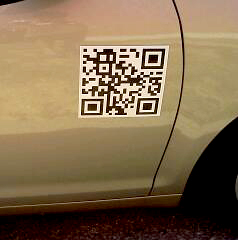
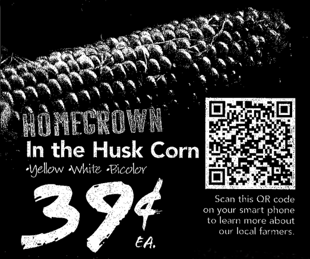
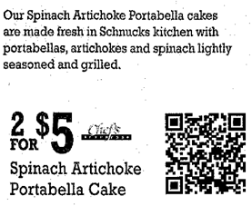

One of the most popular articles on (optional.is) is What are 2D Barcodes. It is both strange and intriguing why this might be. As 2D barcodes are bantered around in the media, I understand that people are interested in learning more. Since the time of writing that article, my opinion of 2D barcodes has changed completely. I want to outline why I feel 2D barcodes are becoming pointless and why everyone is doing it all wrong!
2D Barcodes
You see them dotted around everywhere these days. Those small, black and white titled icons saying “Click here with your smart phone!”. Their usage has thoroughly been corrupted by abhorrent practices to the point of them being useless to the customer!
The first gripe: Branding
All these 2D barcodes tend to say something like “Visit our site for more info” next to the pattern. I can’t help but think to myself, great, what is your URL? Oh, you’ve obfuscated it behind these black and white squares.
If you are going to use 2D barcodes, why oh why not ALSO give use the URL in human readable text? I’ve seen 2D barcodes on billboards, train stops, adverts on walls and other places where I can’t get out a $500 smart phone and take a photo in any reasonable amount of light, time and safety. If you added your URL using the alphabetic glyphs a human can read, then I might remember or write it down, but you didn’t, so I didn’t learn about your offer or product.
If you must use 2D barcodes, then please also add a URL in human readable text as well. I don’t have a fancy smart phone, in fact, neither does over 80% of people who carry a phone. 4 out of 5 people can’t decode your 2D barcode and yet, you give them no other ways of accessing your information. Just a human, unfriendly block of black and white squares… well done attracting that next customer. All you worry about is click-thru rates, tracking, engagement and metrics. It probably never occurred to you that by using 2D barcodes to track click-thrus, you are omitting users. You can track the visits, but have no idea how many people saw the 2D barcode and couldn’t engage.
I was recently send a picture of a 2D barcode on a car door. Ironically, the photo was taken via a camera on a phone, so it goes to show that people can take the photo, but can’t decode it either due to lack of software or ignorance of what it is. The 2D barcode did not have the URL printed nearby, without phones with decoding software, which is to say most people’s, this massive, prime real-estate, car-side door advertising space was wasted. In my head, I am wondering who thought this was a good idea!
Salesman #1 says, “Lets put our logo on the side of a car.”
Boss: “That’s a good idea!”
Salesman #2: “What if we add our URL so people can shop online if they don’t recognize the logo!”
Boss: “An even better idea, we should make the URL part of our logo.”
Salesman #3: “How about we scrape all that and make it this new 2D barcode I heard my nephew talking about. They are the future!”
Now, this might sound cool, but why sacrifice brand and URLs for obfuscated squares! Especially on a car door. Most vehicles are moving and you might catch a glimpse of them as they roll past. A strongly branded logo is memorable as it zips by, maybe people would catch the textual URL if it was short and catchy, but a 2D barcode! I doubt it. Who has time to take out a phone, navigate to the application, launch it, point it at the speeding vehicle… Oh no, its gone. did you see what it said? Nope. Out of context, a 2D barcode fails miserably. There are so many simple shortcuts that can improve or even replace 2D barcodes, but no one ever does.
The second gripe: Size
It’s usually too small. The right size does matter. You almost never make 2D barcodes big enough to read with older cameras on early phones. If I can’t decode it, then please see gripe number 1 as a fallback! Since you need to make the 2D barcode big enough for phones to read it, you take away valuable space for actual information. The amount of ink and space used to make a barcode is almost always larger than a simple text URL. Think about that before you waste my time and eyeballs.
My third gripe: Beauty
They are in no way ascetically pleasing. Some companies do this much better than others, but generally it is a massive block right in the middle of an advertisement. It certainly wasn’t the art director who added this, it was a middle-manager who thought they needed it in their ad space to look cool. Are you advertising to humans or to robots? What is it about a white and black, nondescript set of squares that entices me about your product?
A local paid-for newspaper decided to run an issue with 2D barcodes. It was less of a decision and more that the local phone company turned the entire paper into an advertisement, and bought enough copies to give to everyone in Iceland for free. Dotted around the articles were 2D barcodes. None of which were large enough for my phone to decode, so that violates gripe #2. None had any URL info, see gripe #1, but when you manage to decode them, they went to advertisements or at best a link to the same article in a digital form. That doesn’t really improve the reading experience. Nothing about this little un-ascetic square made the reading experience better, no interaction, no social engagement, no link to comment. It was an attempt by the phone company to research info about the general public while trying to push more smart phone sales to them. Note that they never did a follow-up or ran a second paper with 2D barcodes.
My fourth gripe: Input
We don’t use T9 input anymore. There was once a use-case where this was a genuine problem. Data entry on a phone via T9 was always a pain. If you had a poster of an upcoming concert and wanted to have a link to buy tickets from some third-party provider, then you would have a massive URL with registration code, location, date, venue, band, some API key, etc. It would be really large and unwieldy to type. To get around this massive URL, which had a high probability of being mis-typed, clicking a 2D barcodes made it easier. But tiny URLs can also mitigate the risk of typos. A tiny URL can make a long URL short which can be printed in the advertisement. This solves gripe #1! Most smartphones worth their price are using full keyboards. There is no reason to use T9 for slow input any more. 2D barcodes are solving a problem that no longer is really the issue. A short URL works in so many better ways than 2D barcodes and is easy to type on any modern phone that could decode a 2D barcode. A single pattern to photograph and decode was important in a world where the devices didn’t have full keyboard, or even keyboards at all. Like 1D barcodes, 2D could be read by devices without any user-input. Think barcode scanners on assembly lines. Somehow it transferred over to a world in which we can type on a full qwerty keyboard, yet people are pushing tools which go against our normal input methods and replace them with a more “machine friendly” interaction.
My fifth gripe: Smarts
Smart phones are smart! At some point smart phones are just going to leap-frog the need for 2D barcodes altogether. We’ve already begun to see this happening with augmented reality layering applications, cheap software to do edge detection, facial recognition and others is becoming ubiquitous. At some point there won’t need to be a barcode or icon printed on the box to alert a phone to data, but rather Optical Character Recognition (OCR) which simply decodes the human readable alphabetic glyphs and converts them into a digital version which can just as easily be digitally “clicked”. No need to slap a 2D barcode on that cereal box for more information, your phone will grok out any URLs or simply recognize the box itself and take you where it needs to go.
Papervison3D is similar to 2D barcodes, but instead of the data being encoded in the ink of the barcode, the pattern is unique-ish and specific software running locally finds the shape and executes the animation, message, etc. according to the location of that pattern. Then there are companies like BlippAR which do this recognizing just the shapes.
That said, augmented reality isn’t going to be the end-all, be-all solution either. 2D barcodes give us a visible signal that is something more. They are an icon which represents “Here is a link to more info, if you can decode it”. Augmented reality is an always on technology, like air it surrounds us, but we need a way to let people know to be sure to turn it on. No one will wander all day looking through the screen on their phone, running down the batteries and running up their data bill, all for not finding anything. There needs to be a symbol that says you are entering an virtually augmented area, which sort of defeats the purpose.
We have seen applications which will convert any text it sees through its camera lens into digitized text the application can interact with, translate, link and augment. There was no need for any 2D barcode to do this only human readable text the machine interpreted. To achieve this we didn’t fork into two parallel realities, a physical and wholly non-overlapping digital world, we only have one reality which is made smoother via digital augmentation.
Real world examples
These are a few 2D barcodes from just one newspaper ad. We’ll start with the least offending against my gripes. This is an ad for ground beef. They are attempting to do a good job in promoting you to buy it by showing you videos and recipes. They announce what the 2D barcode will do if you take a picture of it. Firstly, it should have a URL, you can see from the patterns in the barcode that it is a large amount of text encoded. If you decode it, it is a massive URL which I would prefer not to type. An alternative is to use a short URL, you get tracking and the benefit of less typing and errors. Also, look at the size of the 2D barcode compared to the ad, it takes maybe 1/6th the printed area! Finally, most consumers don’t care that this is a QR Code, they don’t even know what a QR Code is! No where have you explained what app on your smart phone to use, or why a QR or 2D barcodes is useful. There is a massive learning curve and jargon they just skipped right over. People know what www.your-website-here.com means, that would be a much better solution. Ironically, right below the barcode, they offer more recipes at a URL. Which one do you think gets more attention?
The next offender is an advertisement for corn. Again, we are lacking any sort of URL to type. This decodes to a URL for a youtube video. The text doesn’t mention video, only “learn more”. I am not sure the types of people who are at home on a lazy sunday afternoon reading the newspaper would get out a smart phone to watch a video or do it on their desktop computer? But there is next to no way to decode this on your computer, so why omit the textual URL? The placement of this 2d barcode is the same size as the price, with white on black, both are fighting for visual prominence. Also, what is a QR code? I want to learn more about our local farmers, do I need to buy a smart phone to do it?
Finally, the worst offender, it goes to a third party site that isn’t some well known social media site and isn’t the grocery store. As you can see, this 2D barcode gives you no information. It is roughly 1/6th the ad space with zero instructions, zero hints about what it does, where it goes or what you’ll expect to find. It almost looks like printer registration marks for the machines rather than something a human is suppose to interact with.
So what are the alternatives?
If you are going to use 2D barcodes, it is important to have a fallback. Most people won’t be able to decode them, so what are you going todo? Offer alternatives, such as URLs. Not to mention the years of branding that you spending with your logo design, the typography, the colors and brand guidelines should not be thrown out the window for some new fangled technology. Your brand is important, a series of white and black squares that all look the same is not your brand! Spend some time and develop guidelines for 2D barcode usage, when it is appropriate, in what context, what is the purpose, and how does affect people who can’t decode or don’t know what this is?
I love the idea of 2D barcodes and would be extremely happy if they did take off, but I recognize that it is a losing battle. 2D barcodes have been around for several years now and never seemed to get traction. There are dozens of formats, several with a large market share, others backed by large companies like Microsoft. Still none have managed to peak the public’s interest or shown to add enough value that people get interested. Google dropped support for 2D barcodes in their print advertising scheme. I wouldn’t say this is a fatal blow, but when large companies with vested interests in usability driving their sales stop offering 2D barcodes, then something is amiss. To me this was one of the first signs of, “we tried and it just didn’t work”, time to cut your losses and move on, a little more knowledgable than you were previously. It is the years of failure which will prevent companies who experimented with 2D barcodes from getting sucked into “the next big thing”. Right now the people pushing 2D barcodes are not tech companies, but rather grocery stores, auto dealer ships, etc. They are not knowledgable in their use of user-experience or digital tracking, they are latching onto a fad. They don’t yet have the years of failure to teach them any better. Hopefully they will learn and not be so quick to favor a new technology over their own customers and potential sales.